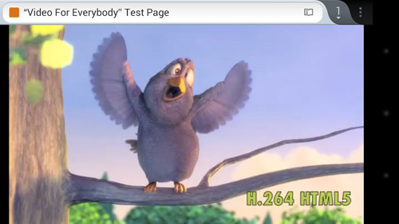
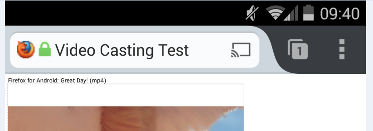

傳送影像到 Chromecast 與 Roku 串流裝置中播放
我們努力開發 Firefox for Android 測試版 (Beta) 中的多重畫面功能。現在只要是你瀏覽中網頁的影片內容，就能透過新的「傳送到裝置 (Send to device)」的影片傳送功能，傳送到第二個畫面並供你欣賞。現在就來協助我們測試此功能。
使用者現能更進一步掌握 Web 經驗，並將自己想要欣賞的影片內容送到較大的螢幕播放。任何影片在傳送到其他裝置上，仍同樣可透過 Firefox for Android 畫面底部的「媒體控制列 (Media Control Bar)」而直接播放、暫停、關閉影片。且影片播放期間均會持續顯示媒體控制列，即使切換分頁或瀏覽新網頁，該功能列也不會突然消失。

Firefox for Android 測試版的「媒體控制列」(圖為 Roku 串流媒體)
為了讓使用者知道「目前在 Firefox for Android 上觀看的影片，也能傳送到連線的媒體串流裝置上」，影片的播放控制列將 (在任何廣告結束之後) 顯示「傳送至」指示圖。

網址列於右側顯示的「傳送至」指示圖
點擊此圖示之後，就會帶出目前連線的串流媒體裝置清單。使用者可選擇想要傳送影片的裝置，以於大螢幕上觀看影片。而網址列中也會出現「傳送至」指示圖，提醒使用者該網頁的內容已經傳送到裝置上。
著手測試
如果想在 Roku 或 Chromecast 上測試此功能，請按照下列說明進行：
- 確認已安裝 Firefox for Android Beta。
- 確認附近的電視機上已設定了 Roku 或 Chromecast，而且必須與你的 Android 手機共用相同的 WiFi 網路。
- 如果要串流至 Roku，請先將 Firefox 頻道新增至頻道清單中。可在這裡了解該如何於 Roku 上新增頻道。
- 開啟如 CNN.com 網站，找到首頁上的影片。只要開始播放可支援的影片 (在廣告播放完畢之後)，上述的「傳送至」圖示就會出現在影片控制列中，代表該影片可傳送到附近的串流裝置上。
- 只要點一下影片，再點擊影片控制列或網址列中的「傳送至」，就會將目前觀看中的影片傳送到附近的媒體串流裝置上。此兩個「傳送至」的功能，都會自動切換到 Roku 的 Firefox 頻道，或啟動Chromecast 的串流功能，以將影片傳送到鄰近的電視機上。
另請注意
- 只要 Firefox for Android 所支援的播放格式，該裝置也同樣支援 (如 Roku 支援 MP4)，就能順利播放影片。
- 某些網站會隱藏或自訂 HTML5 的影片控制功能，也有網站不使用影片播放選單。如果要將這類網站的影片傳送到相容裝置 (如 Roku) 上播放就有點麻煩。其實這時就單純在網頁上播放影片即可。但若影片是 MP4 格式，且 Firefox for Android Beta 能抓到你的 Roku 裝置，就會在網址列中顯示「傳送至裝置 (Send to Device)」圖示。只要點擊該圖示就能在 Roku 上欣賞影片。
此項「將影片傳送到相容裝置 (如 Roku 與 Chromecast)」的功能，目前仍為預先釋出的版本。我們需要大家協助測試此有趣功能。請記得隨時提供你的寶貴意見並提報任何問題。祝測試愉快！
更多資訊：
- Windows、Mac、Linux 版 Firefox Beta 版本說明
原文連結：Road-Test sending video to Chromecast and Roku in Firefox for Android Beta